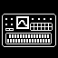

RemoteFM1 Wi-Fi …
… version
Wi-Fi build
2.4 GHz radio
FM-1_729… installs as
Loading the release list…
SOON The Wi-Fi build comes with the next RemoteFM1 release.
Until then nothing is flashed from here; "What is on my FM-1?" works already.
A computer with Chrome or Edge, the FM-1 on a USB data cable, charged and on.
ChoralRoot users: back up with ChoralRoot's own page first.
Flash the Wi-Fi build What is on my FM-1?
READY
This browser has no Web MIDI: open this page in Chrome or Edge on a computer to flash.
Try again
Done. Next: put the FM-1 on your Wi-Fi .
Log
This page flashes only the Wi-Fi build. Back to USB + Bluetooth, USB only or M-VAVE's V15:
remotefm1.com/installer . Installing firmware is at your own risk.